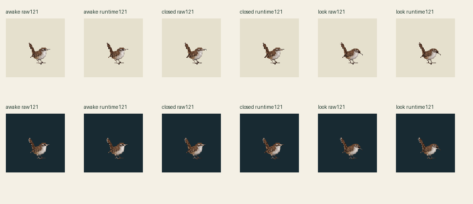
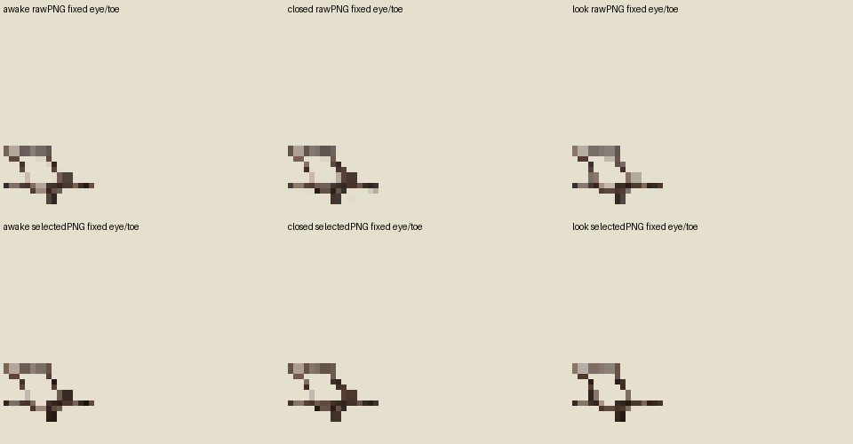

Three existing selected drawings, zero new art/calls/slots. Full shared canvas is drawn at true121×121 CSS world pixels in every panel. Legacy world120.685714 becomes121 (+0.314286 world, +0.260417%); no body normalization.
Legacy96 drawn121 · light
Raw121 · light
Runtime121 · light
Legacy96 drawn121 · dark
Raw121 · dark
Runtime121 · dark
30Hz: inherited blink60/3/27 (100ms closed), look60/6/24 (200ms look); explicit quiet idle90 hold. All three source clip loops remain true in metadata. This review plays one3s episode and holds final awake; replay is explicit. No body bob, root travel or extra art.


Shared full96→121 nearest byte sampling, no crop/pose fit/offset/snap/paint. Common63 opaque colors plus transparency, alpha128, no dither. Structural PASS1239 rectangles/43923 area and exactRGBA reconstruction; full schema/pins/Mac admission not run.
Pivot57,75 projects71.84375,94.53125 → proposed72,95 (metadata only). Rounded technical image probes are not accepted soles or pressure contacts. Contacts[]; geometryReviewed=false; supportWorld=null. Independent candidate visual/geometry review pending. No browser captures or private Library IDs.
Source audit · Structural receipt · Geometry and sampling